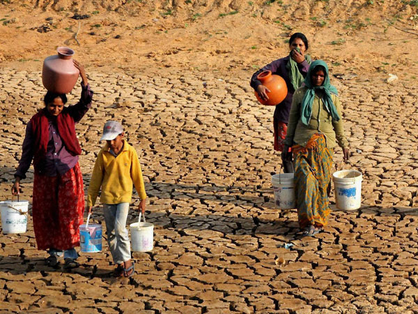

• Droughts are generally caused due to the deficient rainfall over a long period of time.
• India from prolonged monsoon failure leads to drought.
• Areas which are usually affected by droughts are the areas where there is acute shortage of water for domestic use and agriculture.
• In India Rajasthan, Gujarat, Chhattisgarh, Madhya Pradesh, Maharashtra, Karnataka and Odisha often experience droughts.
• Deforestation poor agriculture practices and misuse of groundwater also sometimes cause drought like conditions.
• Drought is a prolonged dry period in the natural climate cycle that can occur anywhere in the world. It is a slow-onset disaster characterized by the lack of precipitation, resulting in a water shortage. Drought can have a serious impact on health, agriculture, economies, energy and the environment
• Droughts are second to hurricanes in being the world’s most costly weather events.
• Weather patterns from the Atlantic and Indian Oceans cause the drought cycles in Africa.
• The 1990 India drought caused the deaths of approximately 3.25 million people.
• Droughts damage animal, bird, and fish habitats as well.
Before And After Effects Of Earthquakes
• Snakes opt to migrate in response to drought, causing an increase in snake bite incidents.
• The ‘Dirty Thirties’ refer to the worst droughts in the U.S. back in the 1930s.
• The droughts of 1987-1989 were recognized as the most costly natural disaster in the history of the U.S.Droughts pose the most risk for Sub-Saharan countries given its terrible effects on food supplies.
Steps that can be useful in minimizing the damage from a drought are:-
• Plant as many trees as possible trees attract moisture and rainfall.
• Do not waste water, stop leaking and recycle used water for watering your garden and washing vehicles.
• The practice of rainwater harvesting to save and store water is now being made mandatory when new construction of residential building is undertaken.
• Drought resistant crops should be grown whenever possible.
• Construct check dams in hilly areas to stop the wasteful runoff during rains is also very useful in fighting water shortage.
• Step 1: Plant drought-resistant plants Reduce your water use in the yard by planting drought-tolerant varieties, mulching trees and plants, and watering your lawn only when absolutely necessary.
• TIP: Water your yard early or late in the day to prevent water evaporation. Do not let water run off into the gutter.
• Step 2: Fix water leaks Fix leaks in your faucets and water pipes.
• Step 3: Take short showers Take short showers and turn the shower off between soaping up and rinsing. Reducing your shower time by one or two minutes can save up to 150 gallons of water each month.
• TIP: Install water-saving shower heads for extra savings.
• Step 4: Adjust toilet tank Place plastic bottles or bricks in your toilet tank to reduce the amount of water used when you flush, and don't flush unnecessarily.
• Step 5: Don't leave water running Don’t leave the water running when it's not necessary. This includes while brushing your teeth, shaving, washing dishes, cleaning vegetables, or washing your car.
• Step 6: Optimize appliance usage Operate your washing machine and dishwasher only when they are full.